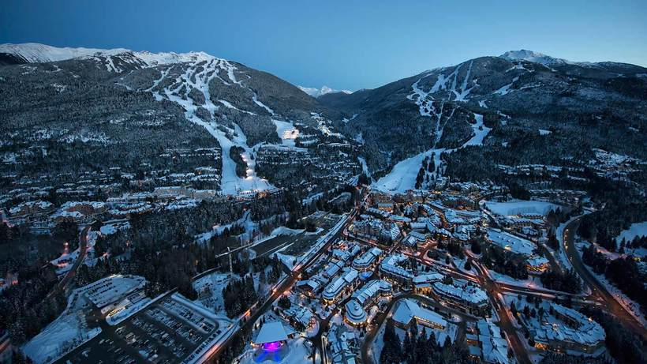

Плануєте подорож до Канади? Дізнайтесь, куди найкраще його зробити!
Куди поїхати в Канаді
Канаду важко не помітити на карті світу, адже за довжиною ця країна посідає друге місце у світі.
Проте не лише цим славиться північна держава. На батьківщині хокею та клинового сиропу місцеві жителі
зуміли зберегти цноту природи та зробити цей факт національним надбанням країни.
Саме природними пам'ятками славиться Канада. На її території налічується велика кількість національних
парків та заповідників. Північна держава одночасно омивається трьома океанами,
а величні гірські хребти роблять її ще величнішою.
Заповідник Банф та скелясті гори
Заповідник Банф розташований у самому серці чудових Скелястих гір у провінції Альберта. Тут представлені найпривабливіші краєвиди, які демонструють красу канадської природи. Бірюзові озера, верхівки гір, загорнуті снігом і льодовики – до всього цього пишноти можна дістатися на території цього заповідника. Перлиною цієї криниці північноамериканської природи є озеро Луїза, в зеленій воді якого відбиваються навколишні гори. Стежка Айсфілдз,
яка проходить від Луїзи до сусіднього заповідника Джаспер, є ще одним обов'язковим пунктом у списку місцевих визначних пам'яток, ви просто зобов'язані її побачити. У південній частині заповідника розташоване маленьке містечко Банф, в якому можна знайти всілякі готелі, магазини та закусочні.
Взимку ж Банф – популярна жива зона для занять зимовими видами спорту. Тут розташовуються Lake Louise Ski Resort і Sunshine Village - два найбільш відомих канадських гірськолижних курорти.
Bістлер

Всього лише за дві години їзди від Ванкувера розташований відомий гірськолижний курорт (і за сумісництвом турбазу) Bістлер.
Хоча цей курорт популярний тим, що на його території переважають зимові види спорту, згодом тут з'явилася можливість відпочивати і в теплі дні: гольф, катання на гірських велосипедах, а також прогулянки в атмосфері міста.
У 2010 році це містечко, до речі, здобуло світову популярність після проведення зимових Олімпійських ігор. Загалом тут є спуски світового класу, готелі, численні ресторани та кафе, а також можливість зайнятися багатьма іншими видами спорту на відкритому повітрі, що супроводжується чудовим краєвидом на гори.
Торонто
Найбільше місто Канади: столиця провінції Онтаріо та центр одного з найзаселеніших регіонів Канади, відомого як Золота підкова. Розміщене у південній частині провінції Онтаріо, на північно-західному узбережжі однойменного озера. Найбільший промисловий, торговий і фінансовий центр Канади, великий транспортний вузол, важливий науковий, культурний, релігійний і мистецький осередок. За версією журналу «Форбс» Торонто замикає десятку міст світу з найпотужнішою економікою (2008)